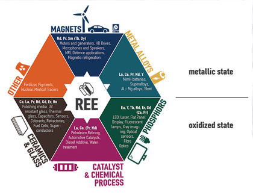
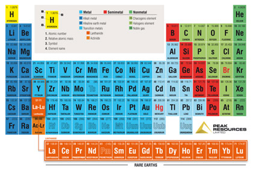
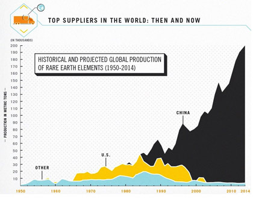

Rare Earth Elements
Inspection and Verification
A material is inspected several times during its life cycle, to confirm it has no contamination and concealed efficiently, and meets specified quality and safety standards.
Gain confidence in the reliability and integrity of material provided.
Global R Metals's inspection services provide our clients with confidence that their material will comply with international and local regulations, voluntary standards and the requirements of Global R Metals.
Our independent third-party inspection services cover all aspects of quality, health and safety and environmental management, as well as efficiency and quality integrity. In the case the material provided is for trade then, they carry out inspections to minimizing the risk of any environmental contamination or contamination in the air and safeguarding the material according to the guidelines and safety standards provided by our company.
Regulations
 There are three international organizations endorses radiation protection levels: the International Commission on Radiological Protection (ICRP), the International Atomic Energy Agency (IAEA) and the International Commission on Radiation Units and Measurements (ICRU). ICRP. The Second International Congress of Radiology established the ICRP in 1928. Although initially concerned with the safety of medical radiology, it now covers safety for all sources of radiation. Its mission is "to deal with the basic principles of radiation protection and to leave to various national protection committees the responsibility of introducing the detailed technical regulations, recommendations or codes of practice best suited to the needs of their individual countries." The ICRP is the principal source of endorses on safe radiation levels. Members come from many countries.IAEA. Organized in 1956 to promote the peaceful uses of nuclear energy, the IAEA is a specialized agency of the United Nations. The IAEA publishes both standards and recommendations in addition to books on nuclear science and technology written by consultants or groups of experts invited from member states.
ICRU. Created in 1925, the ICRU develops international recommendations regarding quantities and units of radiation and radioactivity, procedures for their measurement and application in clinical radiology and radiobiology, and physical data needed to ensure uniformity in reporting on their applications.
U.S. Standards
 U.S. groups involved with recommending radiation standards include the National Council on Radiation Protection and Measurements (NCRP) and federal and state agencies.NCRP. The NCRP began its work in 1929 as the Advisory Committee on X-Ray and Radium Protection. Congress chartered the organization in 1964 as the NCRP to address the scientific and technical aspects of radiation protection. The nonprofit corporation is not a federal agency, although its recommendations are part of the basis of federal, state and local regulations dealing with radiation hazards. The organization draws its members from public and private universities, medical centers, national and private laboratories, the government, and industry solely on the basis of their scientific expertise.
EPA. The U.S. Environmental Protection Agency is responsible for recommending federal guidance on radiation protection for use by federal agencies in their regulatory processes and for establishing standards to protect the general environment from radioactive material under a variety of authorities, including the Clean Air Act, Safe Drinking Water Act, Superfund and Atomic Energy Act.
NRC. The independent NRC is the federal agency responsible for regulating commercial nuclear technologies. The NRC prescribes and enforces separate limits on the amount of radiation that workers and members of the public can receive from all pathways, such as air and water. These regulations apply to operators of nuclear power plants, as well as industrial and medical facilities licensed to use man-made radioactive materials. The NRC bases its regulations on recommendations made by the NCRP and the ICRP and on the EPA's federal guidance and standards.
Sources of Data Used to Set Radiation Standards
 Two series of reports provide much of the data used in setting radiation standards. The reports are produced by National Academy of Sciences (NAS) and United Nations Scientific Committee on the Effects of Atomic Radiation (UNSCEAR).National Academy of Sciences. NAS has published seven reports on the biological effects of ionizing radiation (BEIR) since 1956. The BEIR reports focus on the probability of health effects associated with a given dose of radiation and provide a quantitative basis for limiting the radiation exposure of the entire population. The most recent reports to examine the health risks from exposure to low levels of ionizing radiation are the BEIR V and BEIR VII reports. The BEIR VI report, issued in 1990, reviewed the health effects of exposure to radon. The BEIR VII report, "Health Risks From Exposure to Low Levels of Ionizing Radiation," is the current scientific basis for radiation safety standards in the United States. The 2006 report concluded that scientific studies and radiation data accumulated since publication of the BEIR V report support previous estimates of health risks associated with low doses of radiation, defined as ranging from zero to 10,000 mrem. To put this in perspective, the average American is exposed to approximately 600 mrem of radiation annually from all sources. The report concluded that one percent of individuals receiving a dose of 10,000 mrem would be expected to develop cancer, compared with the 42 percent likely to develop cancer from other causes. The committee that prepared the report said it is difficult to estimate cancer risk from radiation doses below that level. However, the committee concluded that the study continues to support the "linear-no-threshold model" for radiation exposure. The model holds that risk declines commensurate with lower radiation exposures; very low exposures present a very low risk to an individual but cannot be assumed to be zero.
United Nations Committee. UNSCEAR produces reports on the sources of radiation exposure around the world and estimates of radiation risk. Its most recent, "Sources and Effects of Ionizing Radiation," was published in 2010.
The Regulator must check for Radiation Safety clearance and Global R Metals must perform duties imposed regarding radiation safety as below:
- Prepare working rules for the safe use and operation of radiation
- Ensure that the regulator is fully informed of radiation Material
- Ensure that appropriate safety devices, equipment, radiation monitoring and surveying devices are available, regularly tested and in good order
- Maintain all records required by the Act and Regulations to be kept by the local government.
- Ensure that any conditions, restrictions or limitations imposed by the regulators are complied with
- Notify the regulators of any suspected or known contravention of the Regulations and Act
- Notify the regulators of radiation contamination if it exceeds the limits or any abnormal or unplanned radiation contamination occurs.
- Ensure all relevant radiation licenses have been taken for the safety from the regulators.